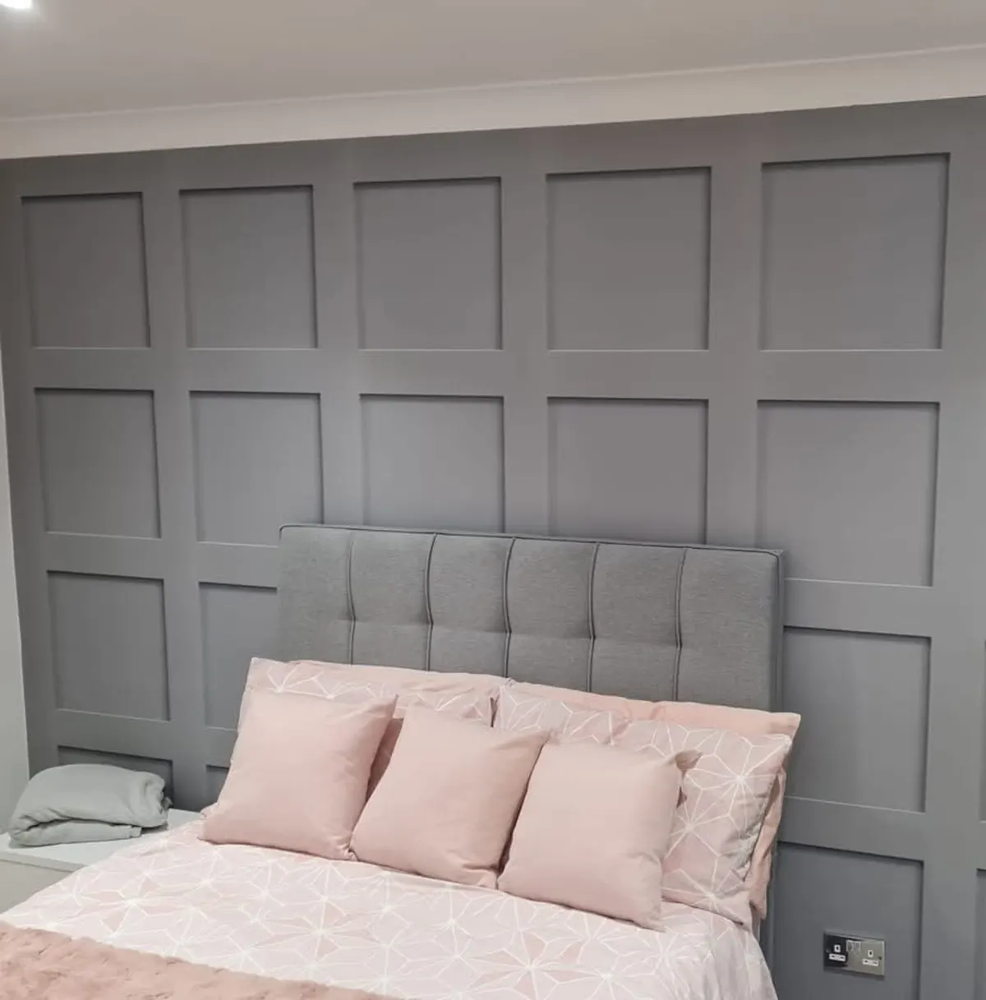

Understand the space
Talk through what needs changing, the current condition and the finish you have in mind.
About Abode Decs
More than 25 years in painting and decorating, with practical property improvements to help bring a space together.
Working with homeowners and commercial customers across Leicestershire.
Talk through your project
The work, in context
Abode Decs brings experienced painting and decorating together with a practical range of property improvements.
Projects can be as focused as refreshing a room or as broad as updating kitchens, bathrooms, flooring and joinery. Every property is different, so the conversation starts with the space, the result you want and the work involved.
With more than 25 years’ experience and an NVQ qualification in Painting & Decorating, Abode Decs can help you understand the options and agree a clear scope before work begins.
Explore all services →A considered approach
Good results come from understanding the job before reaching for the brush.
Talk through what needs changing, the current condition and the finish you have in mind.
Discuss the preparation, materials, timing and any related work before you decide how to proceed.
Preparation and finishing methods are matched to the surfaces and the work involved.
What Abode Decs does
Interior and exterior decorating, wallpapering, panelling, respraying and surface finishes.
Kitchens, bathrooms, flooring, doors and joinery, with plumbing and related work discussed as part of the scope.
Have a project in mind?
Tell Abode Decs about your space, your area and the work you need.